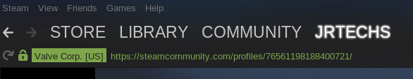
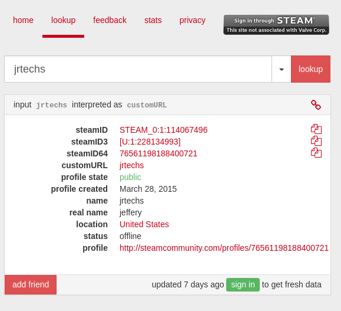
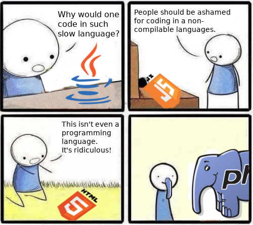

Option 1:
If you have steam open, simply click on the profile which you would like to view
from your friends list. The steam ID will be in the url that appears in the steam
browser.

Option 2:
If you only know the steam username, you can use steam ID look up sites like
STEAMID I/O. For this website, you will want
to use the steamID64 number.

Great question, I will get back to you on that one.
Contrary to popular belief, Java is not a terrible language. For this project I needed something that was easy to work with a Gremlin database -- the tinkerpop framework makes this very convenient. Overall, I needed a backend because I cannot dish out my steam api key to users. Plus, this way I can cache steam friends making graph creation times faster.
Yes. You can read all about Steam's API usage here.
Go for it, all the code is on GitHub. I am going to be making a "comprehensive" docs which should explain how to run this.
Since the server caches all the friend requests in a local graph database, it is possible to not see all your friends if you recently added them. I am working on a solution to this, however, I don't want to excessively hammer the steam API if I don't have to.